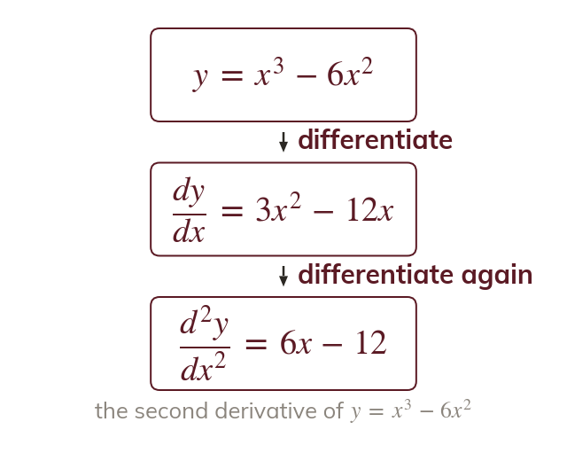
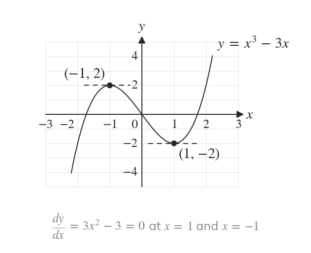
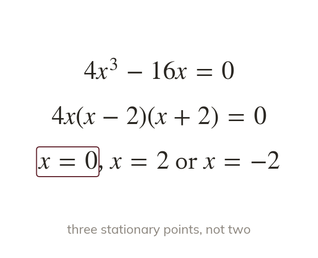
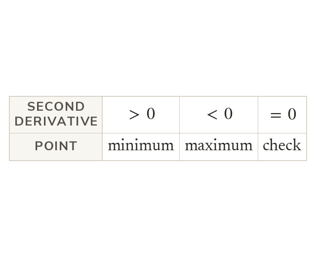
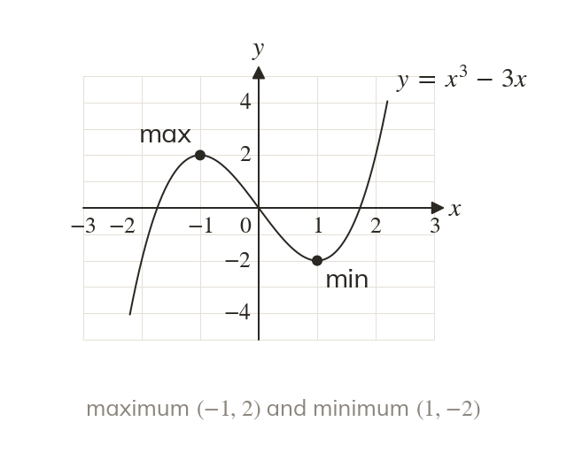
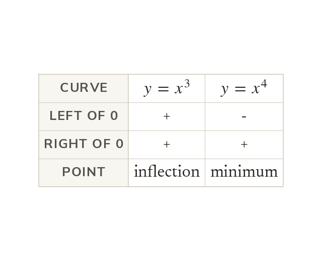

Differentiate twice
The second derivative, or f″(x), is the derivative of It is the rate of change of the gradient.
At a stationary point the gradient is zero, at the tops, bottoms and flat points of a curve. The second derivative tells you which kind each point is, which is what the modelling in needs to show that a value is the largest or the smallest.
Work down the page at your own pace. Write every answer in your book first, then click to check it.
Read each card, then follow the worked examples one step at a time.

The second derivative, or f″(x), is the derivative of It is the rate of change of the gradient.

At a stationary point the tangent is horizontal, so
Solve for x, then find each y from the curve.

The equation can have several roots, and dividing by loses
Factorise instead, so
Pick an answer. If it's wrong, the feedback tells you which mistake it was.
Write the blanks in your book first, then tap each one to check.
Read each card, then follow the worked examples one step at a time.

At a stationary point where f″(a) > the gradient is increasing through so the point is a minimum. Where f″(a) < it is a maximum.

For , At it is so is a minimum; at it is so is a maximum.

The test gives no answer, so look at the gradient just either side. For it is positive on both sides of a point of inflection; for it goes from negative to positive, a minimum.
Pick an answer. If it's wrong, the feedback tells you which mistake it was.
Write the blanks in your book first, then tap each one to check.
Finished? Next lesson: 12.11 Modelling with Differentiation.
For each skill, tap the one that is true for you today. Your Revise pages start with anything you mark Not yet.
Your ratings are saved on this device only.
Log in, then search for a code to practise that skill.